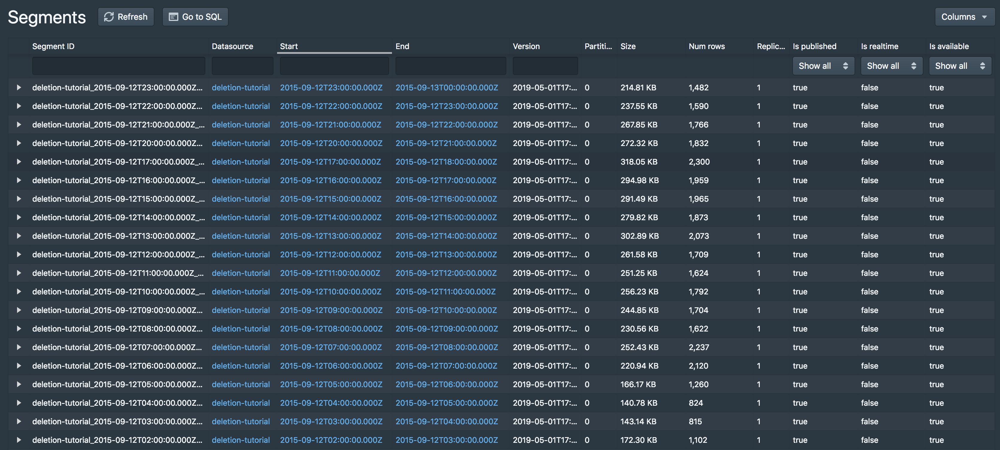
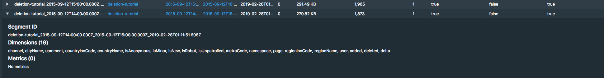
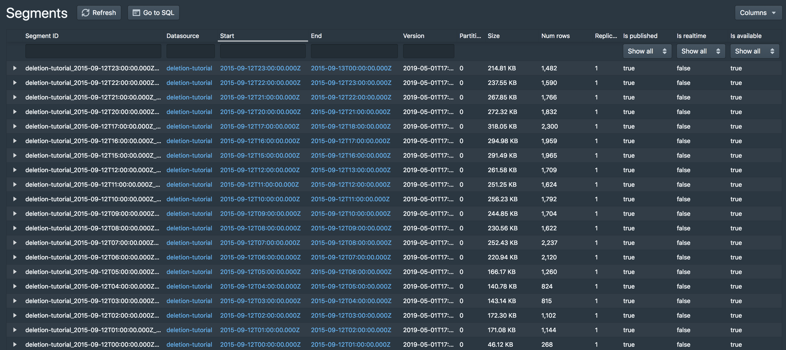

This tutorial demonstrates how to delete existing data.
For this tutorial, we'll assume you've already downloaded Apache Druid as described in the single-machine quickstart and have it running on your local machine.
1.1. Load initial data
In this tutorial, we will use the Wikipedia edits data, with an indexing spec that creates hourly segments. This spec is located at quickstart/tutorial/deletion-index.json, and it creates a datasource called deletion-tutorial.
Let's load this initial data:
bin/post-index-task --file quickstart/tutorial/deletion-index.json --url http://localhost:8081
When the load finishes, open http://localhost:8888/unified-console.md#datasources in a browser.
1.2. How to permanently delete data
Permanent deletion of a Druid segment has two steps:
- The segment must first be marked as "unused". This occurs when a user manually disables a segment through the Coordinator API.
- After segments have been marked as "unused", a Kill Task will delete any "unused" segments from Druid's metadata store as well as deep storage.
Let's drop some segments now, by using the coordinator API to drop data by interval and segmentIds.
1.3. Disable segments by interval
Let's disable segments in a specified interval. This will mark all segments in the interval as "unused", but not remove them from deep storage.
Let's disable segments in interval 2015-09-12T18:00:00.000Z/2015-09-12T20:00:00.000Z i.e. between hour 18 and 20.
curl -X 'POST' -H 'Content-Type:application/json' -d '{ "interval" : "2015-09-12T18:00:00.000Z/2015-09-12T20:00:00.000Z" }' http://localhost:8081/druid/coordinator/v1/datasources/deletion-tutorial/markUnused
After that command completes, you should see that the segment for hour 18 and 19 have been disabled:

Note that the hour 18 and 19 segments are still present in deep storage:
$ ls -l1 var/druid/segments/deletion-tutorial/
2015-09-12T00:00:00.000Z_2015-09-12T01:00:00.000Z
2015-09-12T01:00:00.000Z_2015-09-12T02:00:00.000Z
2015-09-12T02:00:00.000Z_2015-09-12T03:00:00.000Z
2015-09-12T03:00:00.000Z_2015-09-12T04:00:00.000Z
2015-09-12T04:00:00.000Z_2015-09-12T05:00:00.000Z
2015-09-12T05:00:00.000Z_2015-09-12T06:00:00.000Z
2015-09-12T06:00:00.000Z_2015-09-12T07:00:00.000Z
2015-09-12T07:00:00.000Z_2015-09-12T08:00:00.000Z
2015-09-12T08:00:00.000Z_2015-09-12T09:00:00.000Z
2015-09-12T09:00:00.000Z_2015-09-12T10:00:00.000Z
2015-09-12T10:00:00.000Z_2015-09-12T11:00:00.000Z
2015-09-12T11:00:00.000Z_2015-09-12T12:00:00.000Z
2015-09-12T12:00:00.000Z_2015-09-12T13:00:00.000Z
2015-09-12T13:00:00.000Z_2015-09-12T14:00:00.000Z
2015-09-12T14:00:00.000Z_2015-09-12T15:00:00.000Z
2015-09-12T15:00:00.000Z_2015-09-12T16:00:00.000Z
2015-09-12T16:00:00.000Z_2015-09-12T17:00:00.000Z
2015-09-12T17:00:00.000Z_2015-09-12T18:00:00.000Z
2015-09-12T18:00:00.000Z_2015-09-12T19:00:00.000Z
2015-09-12T19:00:00.000Z_2015-09-12T20:00:00.000Z
2015-09-12T20:00:00.000Z_2015-09-12T21:00:00.000Z
2015-09-12T21:00:00.000Z_2015-09-12T22:00:00.000Z
2015-09-12T22:00:00.000Z_2015-09-12T23:00:00.000Z
2015-09-12T23:00:00.000Z_2015-09-13T00:00:00.000Z
1.4. Disable segments by segment IDs
Let's disable some segments by their segmentID. This will again mark the segments as "unused", but not remove them from deep storage. You can see the full segmentID for a segment from UI as explained below.
In the segments view, click the arrow on the left side of one of the remaining segments to expand the segment entry:

The top of the info box shows the full segment ID, e.g. deletion-tutorial_2015-09-12T14:00:00.000Z_2015-09-12T15:00:00.000Z_2019-02-28T01:11:51.606Z for the segment of hour 14.
Let's disable the hour 13 and 14 segments by sending a POST request to the Coordinator with this payload
{
"segmentIds":
[
"deletion-tutorial_2015-09-12T13:00:00.000Z_2015-09-12T14:00:00.000Z_2019-05-01T17:38:46.961Z",
"deletion-tutorial_2015-09-12T14:00:00.000Z_2015-09-12T15:00:00.000Z_2019-05-01T17:38:46.961Z"
]
}
This payload json has been provided at quickstart/tutorial/deletion-disable-segments.json. Submit the POST request to Coordinator like this:
curl -X 'POST' -H 'Content-Type:application/json' -d @quickstart/tutorial/deletion-disable-segments.json http://localhost:8081/druid/coordinator/v1/datasources/deletion-tutorial/markUnused
After that command completes, you should see that the segments for hour 13 and 14 have been disabled:

Note that the hour 13 and 14 segments are still in deep storage:
$ ls -l1 var/druid/segments/deletion-tutorial/
2015-09-12T00:00:00.000Z_2015-09-12T01:00:00.000Z
2015-09-12T01:00:00.000Z_2015-09-12T02:00:00.000Z
2015-09-12T02:00:00.000Z_2015-09-12T03:00:00.000Z
2015-09-12T03:00:00.000Z_2015-09-12T04:00:00.000Z
2015-09-12T04:00:00.000Z_2015-09-12T05:00:00.000Z
2015-09-12T05:00:00.000Z_2015-09-12T06:00:00.000Z
2015-09-12T06:00:00.000Z_2015-09-12T07:00:00.000Z
2015-09-12T07:00:00.000Z_2015-09-12T08:00:00.000Z
2015-09-12T08:00:00.000Z_2015-09-12T09:00:00.000Z
2015-09-12T09:00:00.000Z_2015-09-12T10:00:00.000Z
2015-09-12T10:00:00.000Z_2015-09-12T11:00:00.000Z
2015-09-12T11:00:00.000Z_2015-09-12T12:00:00.000Z
2015-09-12T12:00:00.000Z_2015-09-12T13:00:00.000Z
2015-09-12T13:00:00.000Z_2015-09-12T14:00:00.000Z
2015-09-12T14:00:00.000Z_2015-09-12T15:00:00.000Z
2015-09-12T15:00:00.000Z_2015-09-12T16:00:00.000Z
2015-09-12T16:00:00.000Z_2015-09-12T17:00:00.000Z
2015-09-12T17:00:00.000Z_2015-09-12T18:00:00.000Z
2015-09-12T18:00:00.000Z_2015-09-12T19:00:00.000Z
2015-09-12T19:00:00.000Z_2015-09-12T20:00:00.000Z
2015-09-12T20:00:00.000Z_2015-09-12T21:00:00.000Z
2015-09-12T21:00:00.000Z_2015-09-12T22:00:00.000Z
2015-09-12T22:00:00.000Z_2015-09-12T23:00:00.000Z
2015-09-12T23:00:00.000Z_2015-09-13T00:00:00.000Z
1.5. Run a kill task
Now that we have disabled some segments, we can submit a Kill Task, which will delete the disabled segments from metadata and deep storage.
A Kill Task spec has been provided at quickstart/tutorial/deletion-kill.json. Submit this task to the Overlord with the following command:
curl -X 'POST' -H 'Content-Type:application/json' -d @quickstart/tutorial/deletion-kill.json http://localhost:8081/druid/indexer/v1/task
After this task completes, you can see that the disabled segments have now been removed from deep storage:
$ ls -l1 var/druid/segments/deletion-tutorial/
2015-09-12T12:00:00.000Z_2015-09-12T13:00:00.000Z
2015-09-12T15:00:00.000Z_2015-09-12T16:00:00.000Z
2015-09-12T16:00:00.000Z_2015-09-12T17:00:00.000Z
2015-09-12T17:00:00.000Z_2015-09-12T18:00:00.000Z
2015-09-12T20:00:00.000Z_2015-09-12T21:00:00.000Z
2015-09-12T21:00:00.000Z_2015-09-12T22:00:00.000Z
2015-09-12T22:00:00.000Z_2015-09-12T23:00:00.000Z
2015-09-12T23:00:00.000Z_2015-09-13T00:00:00.000Z